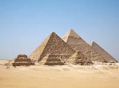

Ancient Roman architecture

Ancient Roman architecture adopted the external language of classical Greek architecture for the purposes of the ancient Romans, but grew so different from Greek buildings as to become a new architectural style. The two styles are often considered one body of classical architecture. Roman architecture flourished in the Roman Republic and even more so under the Empire...